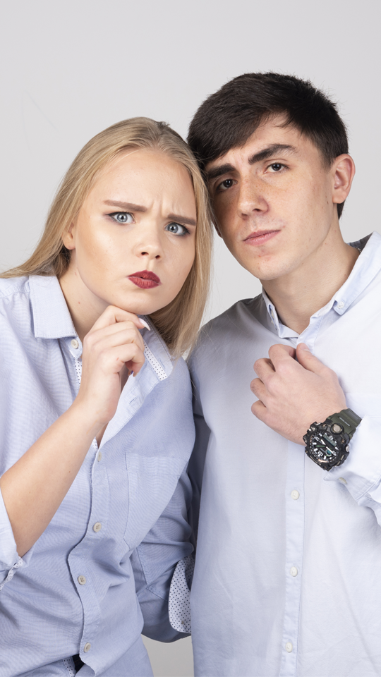

Nombre Apellido
¡Hola! Soy Nombre Apellido, un/una apasionad@ del adiestramiento canino con más de 10 años de experiencia en el campo. Mi misión es ayudar a los dueños de mascotas a construir una relación armoniosa con sus perros a través de técnicas de entrenamiento basadas en el respeto y la comunicación.
¿Quién soy?
Desde joven, he estado fascinado por el comportamiento canino y cómo el adiestramiento puede transformar vidas. He trabajado con una amplia variedad de razas y temperamentos, ofreciendo soluciones personalizadas para cada perro y dueño. Mi enfoque se basa en técnicas modernas y efectivas que promueven el aprendizaje positivo y el bienestar animal.
Mi Experiencia:
- Certificación en Adiestramiento Canino por la Escuela Nacional de Adiestramiento.
- Especialización en Modificación de Conducta y Resolución de Problemas de Comportamiento.
- Más de 2000 horas de práctica en el campo con clientes y sus perros.
- Participación en conferencias y talleres internacionales sobre adiestramiento canino.
- Colaborador en revistas y blogs especializados en comportamiento y entrenamiento canino.
¿Qué Ofrezco?
Ofrezco una amplia gama de servicios, incluyendo:
- Entrenamiento básico y avanzado.
- Corrección de comportamientos problemáticos.
- Socialización y entrenamiento en grupo.
- Consultas individuales y programas personalizados.
- Consejos y recursos para el cuidado y bienestar de tu perro.
